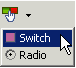
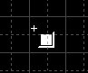
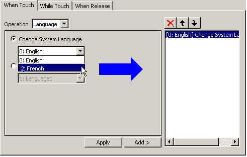
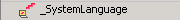
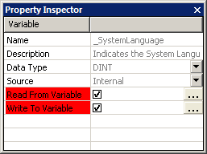
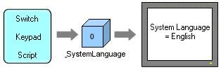
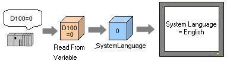
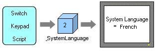
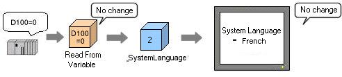

|
|
|
|
|
|
|
|
At run time, you can switch to a different system language using one of the following three methods:
Method |
Description |
|
|---|---|---|
From the Vijeo-Designer Runtime Configuration Menu |
Open the Vijeo-Designer Runtime Configuration menu on each target machine to switch the system language. The communication with equipment will be stopped temporarily while switching languages. |
|
With a Switch |
With a switch, you can change the system language. |
|
With a System Variable |
Using a keypad or scripts |
You can change the system variable (_SystemLanguage) by writing the value using the keypad or script. |
Using the equipment |
You can switch the system variable by writing the value to a user-defined variable that is assigned to the _SystemLanguage variable. |
|

If you change the system language at run time, and then either restart run time or reboot the target machine, the language defaults to the language specified in the Vijeo-Designer Runtime Configuration menu.
Download
a project to the target machine, and then start run time.
For information about downloading projects and starting run time, see
Section 25.6, Downloading
the Project.
Touch
the top-left corner of the HMI panel to open the Vijeo-Designer Runtime
Configuration menu, and in the System tab, touch Language.
For details about the Runtime Configuration menu, see Chapter 26.1,
Configuration Menu.
Select the language that you want to use as the system language, and click OK.
To change the system language at run time, you can use a switch or a drawing set up with Touch Animation. For details, see Section 9.2, Creating Switches.
On the Graphical Objects toolbar, click the Switch icon.

Click the location where you want to place the switch.

Open the Switch Settings dialog box, and in the Touch Action tab, display the Operation list and click Language.

You cannot set languages in the While Touch tab.
Select the system language that you want to change, then add the setting to the touch operation. Use the following selections to switch to that language:
English: 0
French: 2
German: 3
Italian: 4
Spanish: 5
Simplified Chinese: 6
Portuguese: 7
Traditional Chinese: 8

Click Add.

For more details on switches, see Section 9.2, Creating Switches.
Customize the attributes of the switch as necessary and click OK.
If you want to use a graphical object instead
of a switch, set up Touch Animation.
For details, see Section 9.2, Creating
Switches.
To switch languages with the _SystemLanguage variable at run time, you can:
Method 1: Write a script or use the keypad to assign a value—the language ID—to the _SystemLanguage variable.
Method 2: When changing the system language with a script or keypad, write a value directly to _SystemLanguage.
Writing the following value in _System Language displays the corresponding language:
0: English
2: French
3: German
4: Italian
5: Spanish
6: Simplified Chinese
7: Portuguese
8: Traditional Chinese


If you use a switch set up with a Change System Language operation, the value stored in _SystemLanguage is automatically overwritten.
Assign a device address to the _SystemLanguage variable to control the system language from a program on equipment.
Prepare a variable associated with a device address, and set the variable to Read From field the _SystemLanguage properties.
In the Variable Editor, click the System Variable icon to display the system variables.
Select _SystemLanguage from the list of system variables.

In the _SystemLanguage property, click the checkbox for Read From Variable and Write to Variable fields and specify the Read From and Write To variables.

From the equipment program write a value to the device address. Writing the following value displays the corresponding language:
0: English
2: French
3: German
4: Italian
5: Spanish
6: Simplified Chinese
7: Portuguese
8: Traditional Chinese

You can assign different external variables to the Read From and Write To fields.
If a value other than 0, 2, 3, 4, 5, or 6 is written to the Read From variable, the system language will not change.
The language changes only if there is a change in the Read From variable. If the same value is written, the system language will not change.
The value of the system variable and the Write To variable may not match if the equipment changes the value directly in the Write To variable.
You cannot assign system variables to the Read From and Write To fields. If you try to assign system variables, an error message displays.
You can change the system language using one of these methods: 1) from the equipment 2) by using a switch, keypad, or script to change the value in the _SystemLanguage variable.
Method 1: Switch system language using a switch, keypad, or script. The panel changes when a value is written to the system variable _SystemLanguage.

Method 2: Switch system language from equipment. The panel changes when a value is written to the Read From variable.

If the two methods to change the system language are used, the value in the _SystemLanguage and the Read From variable may not match. In this case, there is a possibility that the change system language operation will not run. See the following example.
Using the equipment and the switch method simultaneously to change system languages.
Write 0 to the device address D100, and change the system language to English. At this time, the value 0 is stored in the _SystemLanguage variable.
Write 2 to the _SystemLanguage using the switch, script, or keypad, and switch the system language to French.

The system language is set to French, however, the D100 variable is still 0.
Write the value 0 to D100 again from the equipment. The system language does not change to English, because there is no change to the value.

To change the system language correctly, add the following script.
// Declare Script Variable int a=0,b=0;
// Get the value of the system variable a=_SystemLanguage.getIntValue();
// Get the current value of Integer01 // and assign it to b b=Integer01.getIntValue();
// If a and b are not equal if(a!=b) { // Assign the _SystemLanguage value to the // Read From variable Integer01.write(a); } |